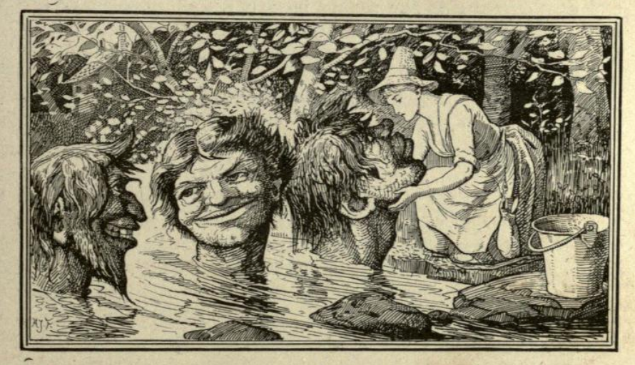

The Three Heads of the Well#
When we first started going to stories 25 years or so ago, this is one of tales I remember being frequently told, and one of my favourites to listen to, perhaps because of that, perhaps because of the repeated refrain, with each teller having their own variant, or perhaps because of the comic potential. I first starting telling it for the ‘Tis Tales “Spring Tales” set, in Spring, 2023.
Here’s the gist of the story:
When the King of Colchester remarries to a rich widow, she turns him against his own beautiful daughter. The King’s daughter leaves with meager provisions, and meets an old man in a forest; she shares her food with him, and receives a stick and some advice in return: ask a hedge to let you through and do what the heads of the well ask you. The hedge opens, and at the well three heads pop up, with the same refrain: “Wash me, and comb me, and lay me down to dry”. The girl does as advised and is weirded in return: yet more beautiful, sweetest voice, marry the finest prince. Meets a prince, weds, and return home in full procession and finery. The foul step-sister is jealous, sets off with rich provisions. Does not share with old man, and is cursed in return. Battles through the hedge, abuses heads: weirded with foul disfigurement, speak toads and snakes, marry a cobbler. Meets cobbler with ointment, treats the worst of her, marries her. Returns home. Step-mother, in anguish at her daughter’s fortune, hangs herself. King gives cobbler some gold, who then goes off with wife to live in remote part of kingdom.
The Three Golden Heads of the Well, as told by Tony Wilson
In terms of collected sources, we can first look to Jacobs’ English Fairy Tales:
The Three Heads of the Well, Jacobs, 1890
In English Fairy Tales, Joseph Jacobs, 1890, pp.222-227](https://archive.org/details/englishfairytal00jacogoog/page/n256/mode/2up)
The Three Heads of the Well
LONG before Arthur and the Knights of the Round Table, there reigned in the eastern part of England a king who kept his Court at Colchester. In the midst of all his glory, his queen died, leaving behind her an only daughter, about fifteen years of age, who for her beauty and kindness was the wonder of all that knew her. But the king hearing of a lady who had likewise an only daughter, had a mind to marry her for the sake of her riches, though she was old, ugly, hook nosed, and hump-backed. Her daughter was a yellow dowdy, full of envy and ill-nature; and, in short, was much of the same mould as her mother. But in a few weeks the king, attended by the nobility and gentry, brought his deformed bride to the palace, where the marriage rites were performed. They had not been long in the Court before they set the king against his own beautiful daughter by false reports. The young princess having lost her father’s love, grew weary of the Court, and one day, meeting with her father in the garden, she begged him, with tears in her eyes, to let her go and seek her fortune; to which the king consented, and ordered her mother-in-law to give her what she pleased. She went to the queen, who gave her a canvas bag of brown bread and hard cheese, with a bottle of beer; though this was but a pitiful dowry for a king’s daughter. She took it, with thanks, and proceeded on her journey, passing through groves, woods, and valleys, till at length she saw an old man sitting on a stone at the mouth of a cave, who said: “ Good morrow, fair maiden, whither away so fast?”
“Aged father,” says she, “ I am going to seek my fortune.”
“What have you got in your bag and bottle?”
“In my bag I have got bread and cheese, and in my bottle good small beer. Would you like to have some?”
“Yes,” said he, “ with all my heart.”
With that the lady pulled out her provisions, and bade him eat and welcome. He did so, and gave her many thanks, and said: “ There is a thick thorny hedge before you, which you cannot get through, but take this wand in your hand, strike it three times, and say, “ Pray, hedge, let me come through,” and it will open immediately; then, a little further, you will find a well; sit down on the brink of it, and there will come up three golden heads, which will speak; and whatever they require, that do.” Promising she would, she took her leave of him. Coming to the hedge and using the old man’s wand, it divided, and let her through; then, coming to the well, she had no sooner sat down than a golden head came up singing:
“Wash me, and comb me,
And lay me down softly.
And lay me on a bank to dry,
That I may look pretty.
When somebody passes by.”
“Yes,” said she, and taking it in her lap combed it with a silver comb, and then placed it upon a primrose bank. Then up came a second and a third head, saying the same as the former. So she did the same for them, and then, pulling out her provisions, sat down to eat her dinner.
Then said the heads one to another: “ What shall we weird for this damsel who has used us so kindly?”
The first said: “ I weird her to be so beautiful that she shall charm the most powerful prince in the world.”
The second said: “I weird her such a sweet voice that shall far exceed the nightingale.”
The third said: “ My gift shall be none of the least, as she is a king’s daughter, I’ll weird her so fortunate that she shall become queen to the greatest prince that reigns.”
She then let them down into the well again, and so went on her journey. She had not travelled long before she saw a king hunting in the park with his nobles. She would have avoided him, but the king, having caught a sight of her, approached, and what with her beauty and sweet voice, fell desperately in love with her, and soon induced her to marry him.
This king finding that she was the King of Colchester’s daughter, ordered some chariots to be got ready, that he might pay the king, his father-in-law, a visit. The chariot in which the king and queen rode was adorned with rich gems of gold. The king, her father, was at first astonished that his daughter had been so fortunate, till the young king let him know of all that had happened. Great was the joy at Court amongst all, with the exception of the queen and her club-footed daughter, who were ready to burst with envy. The rejoicings, with feasting and dancing, continued many days. Then at length they returned home with the dowry her father gave her.
The hump-backed princess, perceiving that her sister had been so lucky in seeking her fortune, wanted to do the same; so she told her mother, and all preparations were made, and she was furnished with rich dresses, and with sugar, almonds, and sweetmeats, in great quantities, and a large bottle of Malaga sack. With these she went the same road as her sister; and coming near the cave, the old man said: “ Young woman, whither so fast?”
“What’s that to you?” said she.
“Then,” said he, “ what have you in your bag and bottle?”
She answered: “ Good things, which you shall not be troubled with.”
“Won’t you give me some?” said he.
“No, not a bit, nor a drop, unless it would choke you.”
The old man frowned, saying: “ Evil fortune attend ye!”
Going on, she came to the hedge, through which she espied a gap, and thought to pass through it; but the hedge closed, and the thorns ran into her flesh, so that it was with great difficulty that she got through. Being now all over blood, she searched for water to wash herself, and looking round, she saw the well. She sat down on thw brink of it, and one of the heads came up, saying: “ Wash me, comb me, and lay me down softly,” as before, but she banged it with her bottle, saying, “Take that for your washing.” So the second and third heads came up, and met with no better treatment than the first. Whereupom the heads consulted among themselves what evils to plague her with for such usage.
The first said: “ Let her be struck with leprosy in her face.”
The second: “ Let her voice be as harsh as a corn-crake’s.”
The third said: “ Let her have for husband but a poor country cobbler.”
Well, she goes on till she came to a town, and it being market-day, the people looked at her, and, seeing such a mangy face, and hearing such a squeaky voice, all fled but a poor country cobbler. Now he not long before had mended the shoes of an old hermit, who, having no money, gave him a box of ointment for the cure of the leprosy, and a bottle of spirits for a harsh voice. So the cobbler having a mind to do an act of charity, was induced to go up to her and ask her who she was.
“I am,” said she, “ the King of Colchester’s daughter-in-law.”
“Well,” said the cobbler, “if I restore you to your natural complexion, and make a sound cure both in face and voice, will you in reward take me for a husband?”
“Yes, friend,” replied she, “with all my heart!”
With this the cobbler applied the remedies, and they made her well in a few weeks; after which they were married, and so set forward for the Court at Colchester, When the queen found that her daughter had married nothing but a poor cobbler, she hanged herself in wrath. The death of the queen so pleased the king, who was glad to get rid of her so soon, that he gave the cobbler a hundred pounds to quit the Court with his lady, and take to a remote part of the kingdom, where he lived many years mending shoes, his wife spinning the thread for him.
Jacobs also provides some historical notes on the story:
Jacobs, Notes on “Three Heads of the Well”
XLIII. THE THREE HEADS OF THE WELL.
Source, — Halliwell, p. 158. The second wish has been somewhat euphemised.
Parallels, — The story forms part of Peele’s Old Wives’ Tales where the rhyme was
A Head rises in the well,
Fair maiden, white and red,
Stroke me smooth and comb my head,
And thou shalt have some cockell-bread.
It is also in Chambers, l.c., [Popular Rhymes of Scotland], 105, where the well is at the World’s End (cf. No. xli.). The contrasted fates of two step-sisters, is the Frau Holle (Grimm, No. 24) type of Folk-tale studied by Cosquin, i. 250, seq. Kate Crackernuts” (No. xxxvii.) is a pleasant contrast to this.
The tale of “The Princess of Colchester” also appears in the 1890 publication of “English fairy and other folk tales”, as selected and edited by E.S. Hartland, citing a Scottish chap-book of 1823 as the source:
“The Princess of Colchester”, Hartland, 1890
In English fairy and other folk tales, selected and edited by E. S. Hartland, 1890, pp20-24:
THE PRINCESS OF COLCHESTER
[From *The History of the Four Kings of Canterbury, Colchester, Cornwall, and Cumberland, their Queens and Daughters*, Chap-book, Falkirk, 1823.]
Long before Arthur and the Knights of the Round Table, there reigned in the eastern part of England a king who kept his Court at Colchester. He was witty, strong, and valiant, by which means he subdued his enemies abroad, and planted peace among his subjects at home. Nevertheless, in the midst of all his glory, his queen died, leaving behind her an only daughter, about fifteen years of age. This lady, from her courtly carriage, beauty, and affability, was the wonder of all that knew her. But as covetousness is the root of all evil, so it happened here. The king, hearing of a lady who had likewise an only daughter, for the sake of her riches, had a mind to marry her, and though she was old, ugly, hook-nosed, and humpbacked, yet all this could not deter him from doing so. Her daughter was a yellow dowdy, full of envy and ill-nature; and, in short, was much of the same mould as her mother. This signified nothing, for in a few weeks the king, attended by the nobility and gentry, brought his deformed bride to his palace, where the marriage rites were performed. They had not been long in the court before they set the king against his own beautiful daughter, which was done by false reports and accusations. The young princess, having lost her father’s love, grew weary of the court, and one day, meeting with her father in the garden, she desired him, with tears in her eyes, to give her a small subsistence, and she would go and seek her fortune; to which the king consented, and ordered her mother-in-law to make up a small sum according to her discretion. She went to the queen, who gave her a canvas bag of brown bread and hard cheese, with a bottle of beer; though this was but a very pitiful dowry for a king’s daughter. She took it, returned thanks, and proceeded on her journey, passing through groves, woods, and valleys, till at length she saw an old man sitting on a stone at the mouth of a cave, who said, “ Good morrow, fair maiden, whither away so fast? “ “Aged father,” says she, “ I am going to seek my fortune.” “What hast thou in thy bag and bottle? “ “In my bag I have got bread and cheese, and in my bottle good small beer. Will you please to partake of either?” “Yes,” said he, “with all my heart.” With that the lady pulled out her provisions, and bade him eat and welcome. He did so, and gave her many thanks, saying thus: “ There is a thick thorny hedge before you, which will appear impassable, but take this wand in your hand, strike three times, and say, ‘Pray, hedge, let me come through,’ and it will open immediately; then, a little further, you will find a well; sit down on the brink of it, and there will come up three golden heads, which will speak; and whatever they require, that do.” Promising she would, she took her leave of him. Coming to the hedge, and pursuing the old man’s directions, it divided, and gave her a passage; then, coming to the well, she had no sooner sat down than a golden head came up singing—
“Wash me, and comb me, And lay me down softly.”
“Yes,” said she, and putting forth her hand, with a silver comb performed the office, placing it upon a primrose bank. Then came up a second and a third head, saying the same as the former, which she complied with, and then pulling out her provisions, ate her dinner. Then said the heads one to another, “What shall we do for this lady who hath used us so kindly?” The first said, * I will cause such addition to her beauty as shall charm the most powerful prince in the world.” The second said, “I will endow her with such perfume, both in body and breath, as shall far exceed the sweetest flowers.” The third said, “ My gift shall be none of the least, for, as she is a king’s daughter, I’ll make her so fortunate that she shall become queen to the greatest prince that reigns.” This done, at their request she let them down into the well again, and so proceeded on her journey. She had not travelled long before she saw a king hunting in the park with his nobles. She would have shunned him, but the king, having caught a sight of her, approached, and what with her beauty and perfumed breath, was so powerfully smitten that he was not able to subdue his passion, but proceeded at once to courtship, and after some embraces gained her love, and, bringing her to his palace, caused her to be clothed in the most magnificent manner.
This being ended, and the king finding that she was the King of Colchester’s daughter, ordered some chariots to be got ready, that he might pay the king a visit. The chariot in which the king and queen rode was adorned with rich ornamental gems of gold. The king, her father, was at first astonished that his daughter had been so fortunate as she was, till the young king made him sensible of all that happened. Great was the joy at court amongst all, with the exception of the queen and her club-footed daughter, who were ready to burst with malice, and envied her happiness; and the greater was their madness because she was now above them alL Great rejoicings, with feasting and dancing, continued many days. Then at length, with the dowry her father gave her, they returned home.
The hump-backed sister-in-law, perceiving that her sister was so happy in seeking her fortune, would needs do the same; so, disclosing her mind to her mother, all preparations were made, and she was furnished not only with rich apparel, but sugar, almonds, and sweetmeats, in great quantities, and a large bottle of Malaga sack. Thus provided, she went the same road as her sister; and coming near the cave, the old man said, “ Young woman, whither so fast?” “What is that to you?” said she. “Then,” said he, “ what have you in your bag and bottle?” She answered, “Good things, which you shall not be troubled with. “ “Won’t you give me some?” said he. “ No, not a bit, nor a drop, unless it would choke you.” The old man frowned, saying, “ Evil fortune attend thee!” Going on, she came to the hedge, through which she espied a gap, and thought to pass through it; but, going in, the hedge closed, and the thorns ran into her flesh, so that it was with great difficulty that she got out Being now in a bloody condition, she searched for water to wash herself, and, looking round, she saw the well. She sat down on the brink of it, and one of the heads came up, saying, “ Wash me, comb me, and lay me down softly,” as before, but she banged it with her bottle, saying, “Take this for your washing.” So the second and third heads came up, and met with no better treatment than the first; whereupon the heads consulted among themselves what evils to plague her with for such usage. The first said, “ Let her be struck with leprosy in her face.” The second, “ Let an additional stink be added to her breath.” The third bestowed on hei for a husband but a poor country cobbler. This done, she goes on till she came to a town, and it being marketday, the people looked at her, and, seeing such a mangy face, all fled but a poor country cobbler, who not long before had mended the shoes of an old hermit, who, having no money, gave him a box of ointment for the cure of the leprosy, and a bottle of spirits for a stinking breath. Now the cobbler, having a mind to do an act of charity, was induced to go up to her and ask her who she was.
“I am,” said she, “ the King of Colchester’s daughter-inlaw.” “Well,” said the cobbler, “if I restore you to your natural complexion, and make a sound cure both in face and breath, will you in reward take me for a husband? “ “Yes, friend,” replied she; “ with all my heart!” With this the cobbler applied the remedies, and they worked the effect in a few weeks; after which they were married, and so set forward for the Court at Colchester. When the queen understood she had married nothing but a poor cobbler, she fell into distraction, and hanged herself in wrath. The death of the queen pleased the king, who was glad to be rid of her so soon, and he gave the cobbler a hundred pounds to quit the Court with his lady, and take her to a remote part of the kingdom, where he lived many years mending shoes, his wife spinning thread.
A third publication in 1890, Andrew Lang’s The Red Fairy Book, also included a “three heads in the well” episode in the The Bushy Bride, set as part of a wider story that also includes a brother, as sourced from Moe. The enchantments to the first girl are great beauty, ‘[g]old [that ]shall drop from her hair whenever she brushes it’ and ‘[g]old [that] shall drop from her mouth whenever she speaks’; for the other: ‘a nose that was four ells long, and a jaw that was three ells, and a fir bush in the middle of her forehead, and every time she spoke ashes should fall from her mouth’.
“The Bushy Bride”, Lang, 1890
In The red fairy book, Andrew Lang, 1890, pp.322-328
THE BUSHY BRIDE
[From J. Moe]
THERE was once on a time a widower who had a son and a daughter by his first wife. They were both good children, and loved each other with all their hearts. After some time had gone by the man married again, and he chose a widow with one daughter who was ugly and wicked, and her mother was ugly and wicked too. From the very day that the new wife came into the house there was no peace for the man’s children, and not a corner to be found where they could get any rest; so the boy thought that the best thing he could do was to go out into the world and try to earn his own bread.
When he had roamed about for some time he came to the King’s palace, where he obtained a place under the coachman; and very brisk and active he was, and the horses that he looked after were so fat and sleek, that they shone again.
But his sister, who was still at home, fared worse and worse. Both her step-mother and her step-sister were always finding fault with her, whatsoever she did and whithersoever she went, and they scolded her and abused her so that she never had an hour’s peace. They made her do all the hard work, and hard words fell to her lot early and late, but little enough food accompanied them.
One day they sent her to the brook to fetch some water home, and an ugly and horrible head rose up out of the water, and said, ‘Wash me, girl!’
‘Yes, I will wash you with pleasure,’ said the girl, and began to wash and scrub the ugly face, but she couldn’t help thinking that it was a very unpleasant piece of work. When she had done it, and done it well, another head rose up out of the water, and this one was uglier still.
‘Brush me, girl!’ said the head.
‘Yes, I will brush you with pleasure,’ said the girl, and set to work with the tangled hair, and, as may be easily imagined, this too was by no means pleasant work.
When she had got it done, another and a much more ugly and horrible-looking head rose up out of the water.
‘Kiss me, girl!’ said the head.
‘Yes, I will kiss you,’ said the man’s daughter, and she did it, but she thought it was the worst bit of work that she had ever had to do in her life.
So the heads all began to talk to each other, and to ask what they should do for this girl who was so full of kindliness.
‘She shall be the prettiest girl that ever was, and fair and bright as the day,’ said the first head.

‘Gold shall drop from her hair whenever she brushes it,’ said the second.
‘Gold shall drop from her mouth whenever she speaks,’ said the third head.
So when the man’s daughter went home, looking as beautiful and bright as day, the step -mother and her daughter grew much more ill-tempered, and it was worse still when she began to talk, and they saw that golden coins dropped from her mouth. The step-mother fell into such a towering passion that she drove the man’s daughter into the pig-stye she might stay there with her fine show of gold, the step-mother said, but she should not be permitted to set foot in the house.
It was not long before the mother wanted her own daughter to go to the stream to fetch some water.
“When she got there with her pails, the first head rose up out of the water close to the bank. ‘Wash me, girl!’ it said.
‘Wash yourself!’ answered the woman’s daughter.
Then the second head appeared.
‘Brush me, girl!’ said the head.
‘Brush yourself!’ said the woman’s daughter.
So down it went to the bottom, and the third head came up.
‘Kiss me, girl!’ said the head.
‘As if I would kiss your ugly mouth!’ said the girl.
So again the heads talked together about what they should do for this girl who was so ill-tempered and full of her own importance, and they agreed that she should have a nose that was four ells long, and a jaw that was three ells, and a fir bush in the middle of her forehead, and every time she spoke ashes should fall from her mouth.
When she came back to the cottage door with her pails, she called to her mother who was inside, ‘Open the door!’
‘Open the door yourself, my own dear child!’ said the mother.
‘I can’t get near, because of my nose,’ said the daughter.
When the mother came and saw her you may imagine what a state of mind she was in, and how she screamed and lamented, but neither the nose nor the jaw grew any the less for that.
Now the brother, who was in service in the King’s palace, had taken a portrait of his sister, and he had carried the picture away with him, and every morning and evening he knelt down before it and prayed for his sister, so dearly did he love her.
The other stable-boys had heard him doing this, so they peeped through the key-hole into his room, and saw that he was kneeling there before a picture; so they told everyone that every morning and evening the youth knelt down and prayed to an idol which he had; and at last they went to the King himself, and begged that he too would peep through the key-hole, and see for himself what the youth did. At first the King would not believe this, but after a long, long time, they prevailed with him, and he crept on tip-toe to the door, peeped through, and saw the youth on his knees, with his hands clasped together before a picture which was hanging on the wall.
‘Open the door!’ cried the King, but the youth did not hear.
So the King called to him again, but the youth was praying so fervently that he did not hear him this time either.
‘Open the door, I say!’ cried the King again. ‘It is!! I want to come in.’
So the youth sprang to the door and unlocked it, but in his haste he forgot to hide the picture.
When the King entered and saw it, he stood still as if he were in fetters, and could not stir from the spot, for the picture seemed to him so beautiful.
‘There is nowhere on earth so beautiful a woman as this!’ said the King.
But the youth told him that she was his sister, and that he had painted her, and that if she was not prettier than the picture she was at all events not uglier.
‘Well, if she is as beautiful as that, I will have her for my Queen,’ said the King, and he commanded the youth to go home and fetch her without a moment’s delay, and to lose no time in coming back. The youth promised to make all the haste he could, and set forth from the King’s palace.
When the brother arrived at home to fetch his sister, her stepmother and step-sister would go too. So they all set out together, and the man’s daughter took with her a casket in which she kept her gold, and a dog which was called Little Snow. These two things were all that she had inherited from her mother. When they had travelled for some time they had to cross the sea, and the brother sat down at the helm, and the mother and the two halfsisters went to the fore-part of the vessel, and they sailed a long, long way. At last they came in sight of land.
‘Look at that white strand there; that is where we shall land,’ said the brother, pointing across the sea.
‘What is my brother saying?’ inquired the man’s daughter.
‘He says that you are to throw your casket out into the sea,’ answered the step -mother.
‘Well, if my brother says so, I must do it,’ said the man’s daughter, and she flung her casket into the sea.
When they had sailed for some time longer, the brother once more pointed over the sea. ‘There you may see the palace to which we are bound,’ said he.
‘What is my brother saying?’ asked the man’s daughter.
‘Now he says that you are to throw your dog into the sea,” answered the step-mother.
The man’s daughter wept, and was sorely troubled, for Little Snow was the dearest thing she had on earth, but at last she threw him overboard.
‘If my brother says that, I must do it, but Heaven knows how unwilling I am to throw thee out, Little Snow!’ said she.
So they sailed onwards a long way farther.
‘There may’st thou see the King coming out to meet thee,’ said the brother, pointing to the sea-shore.
‘What is my brother saying?’ asked his sister again.
‘Now he says that you are to make haste and throw yourself overboard,’ answered the step-mother.
She wept and she wailed, but as her brother had said that, she thought she must do it; so she leaped into the sea.
But when they arrived at the palace, and the King beheld the ugly bride with a nose that was four ells long, a jaw that was three ells, and a forehead that had a bush in the middle of it, he was quite terrified; but the wedding feast was all prepared, as regarded brewing and baking, and all the wedding guests were sitting waiting, so, ugly as she was, the King was forced to take her.
But he was very wroth, and none can blame him for that; so he caused the brother to be thrown into a pit full of snakes.
On the first Thursday night after this, a beautiful maiden came into the kitchen of the palace, and begged the kitchen-maid, who slept there, to lend her a brush. She begged very prettily, and got it, and then she brushed her hair, and the gold dropped from it.
A little dog was with her, and she said to it, ‘Go out, Little Snow, and see if it will soon be day!’
This she said thrice, and the third time that she sent out the dog to see, it was very near dawn. Then she was forced to depart, but as she went she said:
‘Out on thee, ugly Bushy Bride, Sleeping so soft by the young King’s side, On sand and stones my bed I make, And my brother sleeps with the cold snake, Unpitied and unwept.’
I shall come twice more, and then never again,’ said she.
In the morning the kitchen-maid related what she had seen and heard, and the King said that next Thursday night he himself would watch in the kitchen and see if this were true, and when it had hegtin to grow dark he went out into the kitchen to the girl. But though he rubbed his eyes and did everything he could to keep himself awake it was all in vain, for the Bushy Bride crooned and sang till his eyes were fast closed, and when the beautiful young maiden came he was sound asleep and snoring.
This time also, as before, she borrowed a brush and brushed her hair with it, and the gold dropped down as she did it; and again she sent the dog out three times, and when day dawned she departed, but as she was going she said as she had said before, ‘I shall come once more, and then never again.’
On the third Thursday night the King once more insisted on keeping watch. Then he set two men to hold him; each of them was to take an arm, and shake him and jerk him by the arm whenever he seemed to be going to fall asleep; and he set two men to watch his Bushy Bride. But as the night wore on the Bushy Bride again began to croon and to sing, so that his eyes began to close and his head to droop on one side. Then came the lovely maiden, and got the brush and brushed her hair till the gold dropped from it, and then she sent her Little Snow out to see if it would soon be day, and this she did three times. The third time it was iust beginning to grow light, and then she said:
‘Out on thee, ugly Bushy Bride, Sleeping so soft by the young King’s side, On sand and stones my bed I make, And my brother sleeps with the cold snake, Unpitied and unwept.’
‘Now I shall never come again,’ she said, and then she turned to go. But the two men who were holding the King by the arms seized his hands and forced a knife into his grasp, and then made him cut her little finger just enough to make it bleed.
Thus the true bride was freed. The King then awoke, and she told him all that had taken place, and how her step-mother and step-sister had betrayed her. Then the brother was at once taken out of the snake -pit the snakes had never touched him and the step-mother and step-sister were flung down into it instead of him.
No one can tell how delighted the King was to get rid of that hideous Bushy Bride, and get a Queen who was bright and beautiful as day itself.
And now the real wedding was held, and held in such a way that it was heard of and spoken about all over seven kingdoms. The King and his bride drove to church, and Little Snow was in the carriage too. When the blessing was given they went home again, and after that I saw no more of them.
Jacobs’ version, as cited, owes pretty much wholesale to the version in Halliwell’s Popular rhymes and nursery tales, which also owes to the Scottish chap-book, with a minor difference in the second enchantment. For Halliwell, the King’s daughter is weirded “such perfume, both in body and breath, as shall far exceed the sweetest flowers” and the step daughter “an additional smell be added to her breath”, rather than Jacobs’ “sweet voice that shall far exceed the nightingale”, and “a voice as harsh as a corn-crake’s”.
“The Three Heads of the Well”, Halliwell, 1849
In Popular rhymes and nursery tales: a sequel to the Nursery rhymes of England, J. O. (James Orchard) Halliwell-Phillipps, 1849, pp39-343
THE THREE HEADS OF THE WELL.
[This story is abridged from the old chap-book of the Three Kings of Colchester. The incident of the heads rising out of the well is very similar to one introduced in Peele’s Old Wives Tale, 1595, and the verse is also of a similar character.]
Long before Arthur and the Knights of the Round Table, there reigned in the eastern part of England a king who kept his court at Colchester. He was witty, strong, and valiant, by which means he subdued his enemies abroad, and secured peace among his subjects at home. Nevertheless, in the midst of his glory, his queen died, leaving behind her an only daughter, about fifteen years of age. This lady, from her courtly carriage, beauty, and affability, was the wonder of all that knew her; but, as covetousness is said to be the root of all evil, so it happened in this instance. The king hearing of a lady who had likewise an only daughter, for the sake of her riches had a mind to marry; though she was old, ugly, hook-nosed, and humpbacked, yet all this could not deter him from marrying her. Her daughter, also, was a yellow dowdy, full of envy and illnature; and, in short, was much of the same mould as her mother. This signified nothing, for in a few weeks the king, attended by the nobility and gentry, brought his intended bride to his palace, where the marriage rites were performed. They had not been long in the court before they set the king against his own beautiful daughter, which was done by false reports and accusations. The young princess, having lost her father’s love, grew weary of the court, and one day meeting with her father in the garden, she desired him, with tears in her eyes, to give her a small subsistence, and she would go and seek her fortune; to which the king consented, and ordered her mother-in-law to make up a small sum according to her discretion. She went to the queen, who gave her a canvass bag of brown bread and hard cheese, with a bottle of beer; though this was but a very pitiful dowry for a king’s daughter. She took it, returned thanks, and proceeded on her journey, passing through groves, woods, and valleys, till at length she saw an old man sitting on a stone at the mouth of a cave, who said, “Good morrow, fair maiden, whither away so fast?” “Aged father,” says she, “I am going to seek my fortune. “ “What has thou in thy bag and bottle?” “In my bag I have got bread and cheese, and in my bottle good small beer; will you please to partake of either?” ‘Yes,” said he, “with all my heart.” With that the lady pulled out her provisions, and bid him eat and welcome. He did so, and gave her many thanks, saying thus: “There is a thick thorny hedge before you, which will appear impassable, but take this wand in your hand, strike three times, and say, ‘Pray, hedge, let me come through,’ and it will open immediately; then, a little further, you will find a well; sit down on the brink of it, and there will come up three golden heads, which will speak: pray do whatever they require.” Promising she would follow his directions, she took her leave of him. Arriving at the hedge, and pursuing the old man’s directions, it divided, and gave her a passage; then, going to the well, she had no sooner sat down than a golden head came up singing—
Wash me, and comb me,
And lay me down softly,
And lay me on a bank to dry,
That I may look pretty,
When somebody comes by.
“Yes,” said she, and putting forth her hand, with a silver comb performed the office, placing it upon a primrose bank. Then came up a second and a third head, making the same request, which she complied with. She then pulled out her provisions and ate her dinner. Then said the heads one to another, “ What shall we do for this lady who hath used us so kindly?” The first said, “I will cause such addition to her beauty as shall charm the most powerful prince in the world.” The second said, “I will endow her with such perfume, both in body and breath, as shall far exceed the sweetest flowers.” The third said, “My gift shall be none of the least, for, as she is a king’s daughter, I’ll make her so fortunate that she shall become queen to the greatest prince that reigns.” This done, at their request she let them down into the well again, and so proceeded on her journey. She had not travelled long before she saw a king hunting: in the park with his nobles; she would have avoided him, but the king having caught a sight of her, approached, and what with her beauty and perfumed breath, was so powerfully smitten, that he was not able to subdue his passion, but commenced his courtship immediately, and was so successful that he gained her love, and, conducting her to his palace, he caused her to be clothed in the most magnificent manner.
This being ended, and the king finding that she was the king of Colchester’s daughter, ordered some chariots to be got ready, that he might pay the king a visit. The chariot in which the king and queen rode was adorned with rich ornamental gems of gold. The king, her father, was at first astonished that his daughter had been so fortunate as she was, till the young king made him sensible of all that happened. Great was the joy at court amongst all, with the exception of the queen and her club-footed daughter, who were ready to burst with malice, and envied her happiness; and the greater was their madness because she was now above them all. Great rejoicings, with feasting and dancing, continued many days. Then at length, with the dowry her father gave her they returned home.
The deformed daughter perceiving that her sister had been so happy in seeking her fortune, would needs do the same; so disclosing her mind to her mother, all preparations were made, and she was furnished not only with rich apparel, but sweetmeats, sugar, almonds, &c., in great quantities, and a large bottle of Malaga sack. Thus provided, she went the same road as her sister, and coming near the cave, the old man said, “ Young woman, whither so- fast?” “What is that to you,” said she, “Then,” said he, “what have you in your bag and bottle?’ She answered, ‘‘Good things, which you shall not be troubled with.” “Won’t you give me some?” said he. ‘No, not a bit, nora drop, unless it would choke you… The old man frowned, saying, “Evil fortune attend thee.” Going on, she came to the hedge, through which she espied a gap, and thought to pass through it, but, going in, the hedge closed, and the thorns run into her flesh, so that it was with great difficulty that she got out. Being now in a painful condition, she searched for water to wash herself, and, looking round, she saw the well; she sat down on the brink of it, and one of the heads came up, saying, “Wash me, comb me, and lay me down softly, &c.” but she banged it with her bottle, saying, “Take this for your washing.” So the second and third heads came up, and met with no better treatment than the first; whereupon the heads consulted among themselves what evils to plague her with for such usage. The first said, “Let her be struck with leprosy in her face.” The second, “ Let an additional smell be added to her breath.” The third bestowed on her a husband, though but a poor country cobler. This done, she goes on till she came to a town, and it being market day, the people looked at her, and seeing such an evil face fled out of her sight, all but a poor cobler (who not long before had mended the shoes of an old hermit, who having no money, gave him a box of ointment for the cure of the leprosy, and a bottle of spirits for a stinking breath). Now the cobler having a mind to do an act of charity, was induced to go up to her and ask her who she was. “I am,” said she, “the king of Colchester’s daughterin-law. “ “Well,” said the cobler, “if I restore you to your natural complexion, and make a sound cure both in face and breath, will you in reward take me for a husband?” “Yes, friend,” replied she, “with all my heart.” With this the cobler applied the remedies, and they worked the effect in a few weeks, and then they were married, and after a few days they set forward for the court at Colchester. When the queen understood she had married a poor cobler, she fell into distraction, and hanged herself for vexation. The death of the queen was not a source of sorrow to the king, who had only married her for her fortune, and bore her no affection; and shortly afterwards he gave the cobler a hundred pounds to take the daughter to a remote part of the kingdom, where he lived many years mending shoes, while his wife assisted the housekeeping by spinning, and selling the results of her labours at the country market.
The version in Chambers’ Popular rhymes of Scotland of 1870 is presented in a Scottish vernacular. In this case, the heads are explicitly mens heads, who request “ Wash me, wash me, my bonnie May, And dry me wi’ yer clean linen apron.” The corresponding fortunes are: “if she was bonnie afore, she was ten times bonnier; and ilka time she opened her lips to speak, there was a diamond and a ruby and a pearl drappit oot o’ her mouth; and ilka time she kaimed her head, she gat a peck o’ gould and a peck o’ silver oot o’t” and “if she was ugly afore, she’ll be ten times uglier; ilka time she speaks, there’ll a puddock [frog] and a taid [toad] loup oot o’ her mouth; ilka time she kaims her head [combs her hair], she’ll get a peck o’ lice and a peck o’ flechs [fleas] oot o’t.”.
A handy lookup for Scots words is the Dictionaries of the Scots Language; URL hack is https://www.dsl.ac.uk/entry/snd/WORD.
The Wal at the Warld’s End, Chambers, 1870
In Popular rhymes of Scotland, Robert Chambers, 1870, pp105-6:
THE WAL AT THE WARLD’s END (Fife).
There was a king and a queen, and the king had a dochter, and the queen had a dochter. And the king’s dochter was bonnie and guid-natured, and a’body liket her; and the queen’s dochter was ugly and ill-natured, and naebody liket her. And the queen didna like the king’s dochter, and she wanted her awa’. Sae she sent her to the wal at the warld’s end, to get a bottle o’ water, thinking she would never come back. Weel, she took her bottle, and she gaed and gaed or [ere] she cam to a pownie that was tethered, and the pownie said to her:
‘Flit me, flit me, my bonnie May, For I haena been flitted this seven year and a day.’
And the king’s dochter said: ‘Ay will I, my bonnie pownie, I ‘ll flit ye.’ Sae the pownie ga’e her a ride owre the muir o’ hecklepins.
Weel, she gaed far and far and farer nor I can tell, or she cam to the wal at the warld’s end; and when she cam to the wal, it was awfu’ deep, and she couldna get her bottle dippit And as she was lookin’ doon, thinkin’ hoo to do, there lookit up to her three scaud men’s heads, and they said to her:
‘Wash me, wash me, my bonnie May, And dry me wi’ yer clean linen apron.’
And she said: ‘Ay will I; I’ll wash ye.’ Sae she washed the three scaud men’s heads, and dried them wi’ her clean linen, apron; and syne they took and dippit her bottle for her. And the scaud men’s heads said the tane to the tither:
‘Weird, brother, weird, what’ll ye weird?’
And the first ane said: ‘I weird that if she was bonnie afore , she’ll be ten times bonnier.’ And the second ane said: ‘I weird that ilka time she speaks, there’ll a diamond and a ruby and a pearl drap oot o’ her mouth. And the third ane said: ‘I weird that ilka time she kaims her head, she’ll get a peck o’ gould and a peck o’ siller oot o’ it.’
Weel, she cam hame to the king’s coort again, and if she was bonnie afore, she was ten times bonnier; and ilka time she opened her lips to speak, there was a diamond and a ruby and a pearl drappit oot o’ her mouth; and ilka time she kaimed her head, she gat a peck o’ gould and a peck o’ silver oot o’t. And the queen was that vext, she didna ken what to do, but she thocht she wad send her ain dochter to see if she could fa’ in wi’ the same luck. Sae she ga’e her a bottle, and tell’t her to gang awa’ to the wal at the warid’s end, and get a bottle o’ water.
Weel, the queen’s dochter gaed and gaed or she cam to the pownie, an’ the pownie said:
‘Flit me, flit me, my bonnie May, For I haeria been flitted this seven year and a day.’
And the queen’s dochter said: ‘Ou ye nasty beast, do ye think I’ll flit ye? Do ye ken wha ye ‘re speakin’ till? I ‘m a queen’s dochter.’ Sae she wadna flit the pownie, and the pownie wadna gie her a ride owre the muir o’ hecklepins. And she had to gang on her bare feet, and the hecklepins cuttit a’ her feet, and she could hardly gang ava.
Weel, she gaed far and far and farer nor I can tell, or she cam to the wal at the warld’s end. And the wal was deep, and she couldna get her bottle dippit; and as she was lookin’ doon, thinkin’ hoo to do, there lookit up to her three scaud men’s heads, and they said till her:
‘Wash me, wash me, my bonnie May, And dry me wi’ yer clean linen apron.’
And she said: ‘Ou ye nasty dirty beasts, div ye think I ‘m gaunie wash ye? Div ye ken wha ye ‘re speakin’ till? I ‘m a queen’s dochter.’ Sae she wadna wash them, and they wadna dip her bottle for her.
And the scaud men’s heads said the tane to the tither:
‘Weird, brother, weird, what’ll ye weird?’
And the first ane said: ‘I weird that if she was ugly afore, she’ll be ten times uglier.’ And the second said: ‘I weird that ilka time she speaks, there’ll a puddock and a taid loup oot o’ her mouth.’ And the third ane said: ‘And I weird that ilka time she kaims her head, she’ll get a peck o’ lice and a peck o’ flechs oot o’t.’ Sae she gaed awa hame again, and if she was ugly afore, she was ten times uglier; and ilka time (&c.). Sae they had to send her awa’ fra the king’s coort. And there was a bonnie young prince cam and married the king’s dochter; and the queen’s dochter had to put up wi’ an auld cobbler, and he lickit her ilka day wi’ a leather strap. Sae ye see, bairns, &c.
[This peculiarly weird tale, in some of its features, reminds us of the common fairy stories; and yet it probably is of great antiquity. A tale of the Wolf of the Warldis End (wolf being doubtless a misprint for well) is mentioned in the Complaynt of Scotland, 1548.]
Looking further back, elements of the story make an appearance in George Peele’s The Old Wives’ Tale:
The Old Wives Tale, George Peele, 1595
In The old wives tale, 1908 (1595), c. lines 740+:
~lines 740-
Enter Zantyppa the curst Daughter to the well, with a pot in hir hand.
Zant: Now for a husband, house and home, God send a good one or none I pray God: My father hath sent me to the well for the water of life, and tells mee if I give faire wordes I shall have a husband. 7JO
Enter the fowle wench to the well for water with a pot in hir hand.
But heere comes Celanta my sweete sister, Ile stand by and heare what she saies.
Celant: My father hath sent mee to the well for water, and he tells me if I speake faire, I shall have a husband and none of the worst: Well though I am blacke I am sure all the world will not forsake mee, and as the olde proverbe is though I am blacke, I am not the divell. 760
Zant: Marrie gup with a murren, I knowe wherefore thou speakest that, but goe thy waies home as wife as thou canst, or Ile set thee home with a wanion.
Here she strikes hir Pitcher against hir sisters, and breakes them both and goes hir way.
Clant: I thinke this be the curstest queane in the world, you see what she is, a little faire, but as prowd as the divell, and the veriest vixen that lives upon Gods earth. Well Ile let hir alone, and goe home and get another Pitcher, and for all this get me to the well for water. Exit.
Enter two Furies out of the Conjurers Cell and laies Huanebango by the well of life.
Enter Zantippa with a Pitcher to the Well.
Zant: Once againe for a husband, & in faith Celanta I have got the start of you; Belike husbands growe by the Well side; now my father sayes I must rule my tongue: why alas what am I then? a woman without a tongue, is as a souldier without his weapon; but Ile have my water and be gon.
Heere she offers to dip her Pitcher in and a head speakes in the Well.
Head: Gently dip, but not too deepe,
For feare you make the golden birde to weepe,
Faire maiden white and red,
Stroke me fmoothe, and combe my head,
And thou shalt have some cockell bread.
Zant: What is this, faire maiden white & red,
Combe me smooth, and stroke my head:
And thou shalt haue fome cockell bread.
Cockell callest thou it boy, aith Ile give you cockell bread.
Shee breakes hir Pitcher uppon his heade, then it thunders and lightens and Huanebango rises up: Huanebango is deafe and cannot heare.
…
In his notes, Jacobs makes reference to a Scottish tale involving a well at the World’s End. A tale called “The Well of the World’s End”, which resembles Grimm’s “The Frog Prince”, also appears in English Fairy Tales, in which a step-daughter is set an impossible task: fetching water from the well with a sieve. A frog provides advice to daub the sieve with moss in return for a promise to do his bidding for a night. The frog follows the girl home, and her step-mother forces her to do his bidding as promised. At last he tells her to chop of his head; she is unwilling, but as she does so he turns into a Prince.
The sieve motif also appears in Asbjornsen & Moe’s “ (in recent translation, “The Husband’s Daughter and the Wife’s Daughter”), which also strongly resembles the “Three Heads of the Well”, with two step-sister’s behaving differently in a series of deeds along a journey, followed by a set of tasks set by a troll woman, which includes fetching water with a sieve. When the troll chases the girl, fortune is duly dealt out based on how the deeds performed en route were performed. Grimms’ “Frau Holle” also includes two step-sisters completing a set of tasks with some overlap to those in “Husband / Wife Daughters”.
“The Two Step-sisters”, Asbjørnsen & Moe, 1859
In Popular tales from the Norse, Peter Asbjørnsen & Jørgen Moe, 1859, pp355-368:
THE TWO STEP-SISTERS.
ONCE on a time there wae a couple, and each of them had a daughter by a former marriage. The woman’s daughter was dull and lazy, and could never turn her hand to anything, and the man’s daughter was brisk and ready; but somehow or other she could never do anything to her stepmother’s liking, and both the woman and her daughter would have been glad to be rid of her.
So it fell one day the two girls were to go out aod spin by the side of the well, and the woman’s daughter had flax to spin, but the man’s daughter got nothing to spin but bristles.
“I don’t know how it is,” said the woman’s daughter, “you’re always so quick and sharp, but still I’m not afraid to spin a match with you.”
Well, they agreed that she whose thread first snapped, should go down the well. So they span away; but just as they were hard at it, the man’s daughter’s thread broke, and she had to go down the well. But when she got to the bottom, she saw far and wide around her a fair green mead, and she hadn’t hurt herself at all.
So she walked on a bit, till she came to a hedge which she had to crosa.
“Ah! don’t tread hard on us, pray don’t, and I’ll help you another time, that I will,” said the Hedge.
Then the lassie made herself as light as she could, and trode so carefully she scarce touched a twig.
So she went on a bit farther, till she came to a brindled cow, which walked there with a milking-pail on her horns. It was a large pretty cow, and her udder was so full and round.
“Ah! be so good as to milk me, pray,” said the Cow; “I’m so full of milk. Drink as much as yon please, and throw the rest over my hoofs, and see if I don’t help you some day.”
So the man’s daughter did as the cow begged. As soon as she touched the teats, the milk spouted out into the pail. Then she drank till her thirst was slaked; and the rest she threw over the cow’s hoofs, and the milking pail she hung on her horns again.
So when she had gone a bit further, a big wether met her, which had such thick long wool, it hung down and draggled after him on the ground, and on one of his horns hung a great pair of shears.
“Ah, please clip off my wool,” said the Sheep, “ for here I go about with all this wool, and catch up every thing I meet, and besides, it’s so warm, I’m almost choked. Take as much of the fleece as you please, and twist the rest round my neck, and see if I don’t help you some day.”
“Yes!” she was willing enough, and the sheep lay down of himself on her lap, and kept quite still, and she clipped him so neatly, there wasn’t a scratch on his skin. Then she took as mucb of the wool as she chose, and the rest she twisted round the neck of the sheep.
A little further on, she came to an apple-tree, which was loaded with apples; all it’s branches were bowed to the ground, and leaning against the stem was a slender pole.
“Ah! do be so good as to pluck my apples off me,” said the Tree, “ so that my branches may straighten themselves again, for it’s bad work to stand so crooked; but when you beat them down, don’t strike me too hard. Then eat as many as you please, lay the rest round my root, and see if I don’t help you some day or other.”
Yes, she plucked all she could reach with her hands, and then she took the pole and knocked down the rest, and afterwards she ate her fill, and the rest she laid neatly round the root.
So she walked on a long, long way, and then she came to a great farm-house, where an old hag of the Troll’s lived with her daughter. There she turned in to ask if she could get a place.
“Oh!” said the old hag; “ it’s no use your trying. We’ve had ever ao many maids, but none of them was worth her salt.”
But she begged so prettily that they would just take her on trial, that at last they let her stay. So the old hag gave her a sieve, and hade her go and fetch water in it. She thought it strange to feteh water in a sieve, but still she went, aud when she came to the well, the little birds began to sing —
“Daub in clay,
Stuff in straw.
Daub in clay.
Stuff in straw.”
Yes, she did so, and found she could carry water in a sieve well enough; but when she got home with the water, and the old witch saw the sieve, she cried out “ This you haven’t sucked out of your own breast.”
So the old witch said, now she might go into the byre to pitch out dung and milk kine; but when she got there, she found a pitchfork so long and heavy, she couldn’t stir it, much less work with it. She didn’t know at all what to do, or what to make of it; but the little birds sang again that she should take the broom-stick and toss out a little with that, and all the rest of the dung would fly after it. So she did that, and as soon as ever she began with the broom-stick, the byre was as clean as if it had been swept and washed.
Now she had to milk the kine, but they were so restless that they kicked and frisked; there was no getting near them to milk them.
But the little birds sung outside, —
“A little drop, a tiny sup,
For the little birds to drink it up.”
Yes, she did that; she just milked a tiny drop, ‘twas as much as she could, for the little birds outside; and then all the cows stood still and let her milk them. They neither kicked nor frisked; they didn’t even lift a leg.
So when the old witch saw her coming in with the milk, she cried out, —
“This you haven’t sucked out of your own breast. But now JUST TAKE THIS BLACK WOOL AND WASH IT WHITE.”
This the lassie was at her wit’s end to know how to do, for she had never seen or heard of any one who could wash black wool white. Still she said nothing, but took the wool and went down with it to the well. There the little birds sung again, and told her to take the wool and dip it into the great butt that stood there; and she did so, and out it came as white as snow.
“Well I never!” said the old witch, when she come in with the wool, “it’s no good keeping yon. You can do everything, and at last you’ll be the plague of my life. We’d best part, so take your wages and be off.”
Then the old hag drew out three caskets, one red, one green, and one blue, and of these the lassie was to choose one aa wages for her service. Now she didn’t know at all which to choose, but the little birds sung—
“Don’t take the red, don’t take the green,
But take the blue, where may be seen
Three little crosses all in a row,
We saw the marks, and so we know.”
So she took the blue casket, as the birds sang.
“Bad luck to you, then,” said the old witch; “ see if I don’t make you pay for this!”
So when the man’s daughter was just setting off, the old witch shot a red-hot bar of iron after her, but she sprang behind the door and hid herself, so that it missed her, for her friends, the little birds, had told her beforehand how to behave. Then she walked on and on as fast as ever she could; but when she got to the Apple Tree, she heard an awful clatter behind her on the road, and that was the old witch and her daughter coming after her.
So the lassie was so frightened and scared, she didn’t know what to do.
“Come hither to me, lassie, do you hear,” said the Apple tree, “ I’ll help you; get under my branches and hide, for if they catch you, they’ll tear you to death, and take the casket from you.”
Yes! she did so, and she had hardly hidden herself before up came the old witch and her daughter.
“Have you seen any lassie pass this way, you apple tree,” said the old hag.
“Yes, yes,” said the Apple tree; “ one ran by here an hour ago; but now she’s got so far a-head, you’ll never catch her up.”
So the old witch turned back and went home again.
Then the lassie walked on a bit, but when she came just about where the sheep was, she heard an awful clatter beginning on the road behind her, and she didn’t know what to do, she was so scared and frightened; for she knew well enough it was the old witch, who had thought better of it.
“Come hither to me, lassie,” said the Wether, “ and I ‘ll help jou. Hide yourself under my fleece, and then they’ll not see you; else they’ll take away the casket, and tear yon to death.”
Just then up came the old witch, tearing along.
“Have you seen any lassie pass here, yoa sheep?” she cried to the wether.
“Oh yes,” said the Wether, “ I saw one an hour ago, bnt she ran so fast, you’ll never catch her.”
So the old witch turned round and went home.
But when the lassie had come to where she met the cow, she heard another awful clatter behind her.
“Come hither to me, lassie,” said the Cow, “ and I’ll help yon to hide yourself under my udder, else the old hag will come and take away your casket, and tear you to death.”
True enough, it wasn’t long before she came up.
“Have you seen any lassie pass here, you cow?” said the old hag.
“Yes, I saw one an hour ago,” said the Cow, “ but she’s far away now, for she ran so fast I don’t think you’ll ever catch her up.”
So the old hag turned round, and went back home again.
When the lassie had walked a long, long way further on, and was not far from the hedge, she heard again that awful clatter on the road behind her, and she got scared and frightened, for she knew well enough it was the old hag and her daughter, who had changed their minds.
“Come hither to me, lassie,” sud the Hedge, “ and I’ll help you. Creep under my twigs, so that they can’t see you; else they’ll take the casket from yon, and tear you to death.”
Yes! she made all the haste she could to get under the twigs of the hedge.
“Have you seen any lassie pass this way, you hedge?” said the old hag to the hedge.
“No, I haven’t seen any lassie,” answered the Hedge, and was as smooth-tongued as if he had got melted butter in his mouth; but all the while he spread himself out, and made himself so big and tall, one had to think twice befor« crossing him. And so the old witch had no help for it but to turn round and go home again.
So when the man’s daughter got home, her stepmother and her step-sister were more spiteful against her than ever; for now she was much neater, and so smart, it was a joy to look at her. Still she couldn’t get leave to live with them, but they drove her out into a pig-sty. That was to be her house. So she scrubbed it out so neat and clean, and then she opened her casket, just to see what she had got for her wages. But as soon as ever she unlocked it, she saw inside so much gold and silver, and lovely things, which came streaming out till all the walls were hung with them, and at last the pig-sty was far grander than the grandest king’s palace. And when the step-mother and her daughter came to see this, they almost jumped out of their skin, and began to ask her what kind of a place she had down there?
“Oh,” said the lassie “ can’t you see, when I have got such good wages. ‘Twas such a family, and such a mistress to serve, you couldn’t find their like anywhere.”
Yes! the woman’s daughter made up her mind to go out to serve too, that she might get just such another gold casket. So they sat down to spin again, and now the woman’s daughter was to spin bristles, and the man’s daughter flax, and she whose thread first snapped, was to go down the well. It wasn’t long, as yon may fancy, before the woman’s daughter’s thread snapped, and so they threw her down the well.
So the same thing happened. She fell to the bottom, but met with no harm, and found herself on a lovely green meadow. When she had walked a bit she came to the hedge.
“Don’t tread hard on me, pray, lassie, and I’ll help you again,” said the Hedge.
“Oh!” said she, “ what should I care for a bundle of twigs?” and tramped and stamped over the hedge till it cracked and groaned again.
A little further on she came to the cow, which walked about ready to burst for want of milking.
“Be so good as to milk me, lassie,” said the Cow, “ aod I’ll help you again. Drink as much as you please, but throw the rest over my hoofs.”
Yes! she did that; she milked the cow, and drank till she could drink no more; but when she left off, there was none left to throw over the cow’s hoofs, and as for the pail, she tossed it down the hill and walked on.
When she had gone a bit further, she came to the sheep which walked along with his wool dragging after.
“Oh, be so good as to clip me, lassie,” said the Sheep, “ and I’ll serve you again. Take as much of the wool as you will, but twist the rest round my neck.”
Well! she did that; but she went bo carelessly to work, that she cut great pieces out of the poor sheep, and as for the wool, she carried it all away with her.
A little while after she came to the apple tree, which stood there quite crooked with fruit again.
“Be so good as to pluck the apples off me, that my limbs may grow straight, for it’s weary work to stand all awry,” said the Apple Tree. “ But please take care not to beat me too hard. Eat as many as you will, but lay the rest neatly, round my root, and I’ll help you.”
Well, she plucked those nearest to her, and thrashed down those she couldn’t reach with the pole, but she didn’t care how ahe did it, and broke off and tore down great boughs, and ate till she was as fall as full could be, and then she threw down the rest under the tree.
So when she had gone a good bit farther, she came to the farm where the old witch lived. There she asked for a place, but the old hag said she wonldn’t have any more maids, for they were either worth nothing, or were too clever, and cheated her out of her goods. But the woman’s daughter was not to be put off, she would have a place, so the old witch said she’d give her a trial, if she was fit for anything.
The first thing she had to do was to fetch water in a sieve. Well, off she went to the well, and drew water in a sieve, but as fast as she got it in it ran out again. So the little birds sang —
“Daub in clay,
Put in straw;
Daub in clay,
Put in straw!”
But she didn’t care to listen to the birds’ song, and pelted them with clay, till they fiew off far away. And so she had to go home with the empty sieve, and got well scolded by the old witch.
Then she was to go into the byre to clean it, and milk the kine. Bat she was too good for such dirty work, she thought. Still, she went out into the byre, but when she got there, she couldn’t get on at all with the pitchfork, it was so big. The birds said the same to her as they had said to her step-sister, aod told her to take the broomstick, and toss out a little dung, and then all the rest would fly after it; but all she did with the broomstick was to throw it at the birds. When she came to milk, the kine were so unruly, they kicked and pushed, and every time she got a little milk in the pail, over they kicked it. Then the birds sang again—
“A little drop and a tiny sup
For the little birds to drink it up.”
But she beat and banged the cows about, and threw and pelted at the birds everything she could lay hold of, and made such a to do, ‘twas awful to see. So she didn’t make much either of her pitching or milking, and when she came in doors she got blows as well as hard words from the old witch, who sent her off to wash the black wool white; but that, too, she did no better.
Then the old witch thought this really too bad, so she set out the three caskets, one red, one green, and one blue, and said she’d no longer any need of her services, for she wasn’t worth keeping, but for wages she should have leave to choose whichever casket she pleased.
Then sung the little birds, —
“Don’t take the red, don’t take the green,
But choose the blue, where may be seen
Three little crosses, all in a row;
We saw the marks, and so we know.”
She didn’t care a pin for what the birds sang, but took the red, which caught her eye most. And so she set out on her road home, and she went along quietly and easily enough; there was no one who came after her.
So when she got home, her mother was ready to jump with joy, and the two went at once into the ingle, and put the casket up there, for they made up their minds there could be nothing in it but pure silver and gold, and they thought to have all the walls and roof gilded like the pigsty. But lo! when they opened the casket there came tumbling out nothing but toads, and frogs, and snakes; and worse than that, whenever the woman’s daughter opened her mouth, out popped a toad or a snake, and all the vermin one ever thought of, so that at last there was no living in the house with her.
That was all the wages she got for going out to service with the old witch.
The fragmentary version of “The Tale of the Wolf of the Warldis End” in The complaynt of Scotland, invokes key elements of the Frog Prince tale.
“The Tale of the Wolf of the Warldis End” in The complaynt of Scotland, 1548
In The complaynt of Scotland: written in 1548; with a preliminary dissertation, and glossary, John Leyden, 1801, pp234-5:
XIX. The Tale of the Wolf of the Warldis End, is likewise lost, as no MS. copy has been preserved. The romance, for the convenience of singing or narration, has probably been melted down by tradition into detached fragments, from which songs and nursery tales have been formed. I have heard fragments of songs repeated, in which the “ well of the warldis end is mentioned,” and denominated “ the well Absalom, “ and “ the cald well sae weary. “ According to the popular tale, a lady is sent by her stepmother to draw water from the well of the world’s end. “ She arrives at the well, after encountering many dangers; but soon perceives that her adventures have not reached a conclusion. A frog emerges from the well, and, before it suffers her to draw water, obliges her to betrothe herself to the monster, under the penalty of being torn to pieces. The lady returns safe; but at midnight the frog-lover appears at the door, and demands entrance, according to promise, to the great consternation of the lady and her nurse.
“Open the door, my hinny, my hart,
Open the door, mine ain wee thing;
And mind the words that you & I spak
Down in the meadow, at the well-spring.”
The frog is admitted, and addresses her —
“Take me up on your knee, my dearie,
Take me up on your knee, my dearie;
And mind the words that you & I spak
At the cauld well sac weary.”
The frog is finally disenchanted, and appears as a prince, in his original form.
In the romance of Roswall and Lilian, it is said, that
“The knight that kept the Pavent well,
Was not so fair as Roswall.”
Whether these circumstances have any relation to this romance, I cannot determine.